ELEN 100L (Electric Circuits II): Project 2, Shane Buck, Thomas Heckman
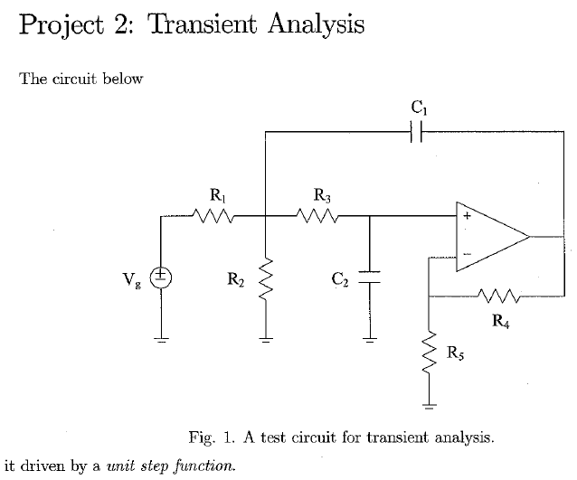
Hard Copy Deliverables:
- Hard copy for hand calculations.
- A MATLAB script and publish the solution using MATLAB's publish feature.
- Turn in MATLAB scripts and a document of the run-time results.
- Turn in oscilloscope images of the measured results.
Soft Copy Deliverables:
- Turn in all MATLAB files.
- Turn in all LTSpice files.
- Turn in all oscilloscope images of the measured results.
Contents
Initialize MATLAB Environment
clear; clc; clf; cla; close all; format long; format compact;
Setup global variables
% These Ideal Design element values are fixed in the circuit. VG = 1 ; % Generator voltage Vdd_pos = 15 ; % Positive power supply voltage Vdd_neg = -15 ; % Negative power supply voltage R1_ideal_2 = 5000 ; % Ohms R2_ideal_2 = 5000 ; % Ohms R3_ideal_2 = 400 ; % Ohms R4_ideal_2 = 1000 ; % Ohms R5_ideal_2 = 1000 ; % Ohms C1_ideal_2 = 0.1*10^-6 ; % Farads C2_ideal_2 = 0.1*10^-6 ; % Farads R1_ideal_6 = 1373 ; % Ohms R2_ideal_6 = 1373 ; % Ohms R3_ideal_6 = 960 ; % Ohms R4_ideal_6 = 1000 ; % Ohms R5_ideal_6 = 1000 ; % Ohms C1_ideal_6 = 0.1*10^-6 ; % Farads C2_ideal_6 = 0.1*10^-6 ; % Farads % Build an array for the R elements. R_ideal_2 = [R1_ideal_2, R2_ideal_2, R3_ideal_2, R4_ideal_2, R5_ideal_2]; R_ideal_6 = [R1_ideal_6, R2_ideal_6, R3_ideal_6, R4_ideal_6, R5_ideal_6]; % Build an array for the C elements. C_ideal_2 = [ (0), (0), (0), (0), (0) ; ... (0), -(C1_ideal_2), (0), (0), (C1_ideal_2); ... (0), (0), -(C2_ideal_2), (0), (0) ; ... (0), (0), (0), (0), (0) ; ... (0), (0), (0), (0), (0) ]; C_ideal_6 = [ (0), (0), (0), (0), (0) ; ... (0), -(C1_ideal_6), (0), (0), (C1_ideal_6); ... (0), (0), -(C2_ideal_6), (0), (0) ; ... (0), (0), (0), (0), (0) ; ... (0), (0), (0), (0), (0) ]; % Build an array for the source elements. B = [VG;0;0;0;0]; % Build an array for the the time vector. time2 = [0, 3*10^(-3)]; time6 = [0, 1*10^(-3)]; % Build an array for the the initial conditions. x0 = [0; 0; 0; 0; 0]; % Assume everything is zero to start % These values are used for plotting purposes. fignum = 1; plot_left_2 = 0; plot_right_2 = time2(2); % x-axis range (seconds) plot_bottom_2 = 0; plot_top_2 = VG+0.6; % y-axis range (volts) plot_left_6 = 0; plot_right_6 = time6(2); % x-axis range (seconds) plot_bottom_6 = 0; plot_top_6 = VG+0.2; % y-axis range (volts)
Problem 2
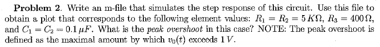
fignum = fignum+1;
Display the component values for the Ideal design.
display(' '); display('The Ideal Design component values are:'); fprintf(' R1 = %+11.4f Ohms.\n', R1_ideal_2); fprintf(' R2 = %+11.4f Ohms.\n', R2_ideal_2); fprintf(' R3 = %+11.4f Ohms.\n', R3_ideal_2); fprintf(' R4 = %+11.4f Ohms.\n', R4_ideal_2); fprintf(' R5 = %+11.4f Ohms.\n', R5_ideal_2); fprintf(' C1 = %+11.4e Farads.\n', C1_ideal_2); fprintf(' C2 = %+11.4e Farads.\n', C2_ideal_2);
The Ideal Design component values are:
R1 = +5000.0000 Ohms.
R2 = +5000.0000 Ohms.
R3 = +400.0000 Ohms.
R4 = +1000.0000 Ohms.
R5 = +1000.0000 Ohms.
C1 = +1.0000e-07 Farads.
C2 = +1.0000e-07 Farads.
Calculate the MATLAB transient response for the Ideal design.
% Update the resistor variables used in the proj2E100_transient function % before calling the ode23t solver. R1_circuit = R1_ideal_2; R2_circuit = R2_ideal_2; R3_circuit = R3_ideal_2; R4_circuit = R4_ideal_2; R5_circuit = R5_ideal_2; options = odeset('mass', C_ideal_2 , 'RelTol', 0.1e-9); [t2, x2] = ode23t(@proj2E100_transient, time2, x0, options); % Capture peak overshoot and undershoot voltages with indexes. [v5_pk_overshoot_ideal_2 , ... v5_pk_overshoot_ideal_index_2 ] = max( x2(:,5) ); [v5_pk_undershoot_ideal_2, ... v5_pk_undershoot_ideal_index_2] = ... min( x2(v5_pk_overshoot_ideal_index_2 + 1:size(t2),5) ); v5_pk_undershoot_ideal_index_2 = ... v5_pk_undershoot_ideal_index_2 + v5_pk_overshoot_ideal_index_2; % Capture peak overshoot and undershoot time stamps at peak indexes. t2_pk_overshoot_ideal_2 = t2( v5_pk_overshoot_ideal_index_2); t2_pk_undershoot_ideal_2 = t2(v5_pk_undershoot_ideal_index_2);
Generate the MATLAB plot for the transient response.
fignum = fignum+1; figObj = figure(fignum); % Establish a figure number set(fignum, 'Name', ... ['Prob 2: Transient Response Ideal Design']); % Name the figure Tr_ideal_2_Plot = plot(t2,x2); % Generate plot grid on; % Turn grid on xlabel('Time (seconds)'); % Label the x-axis ylabel('Amplitude (volts)'); % Label the y-axis axis([plot_left_2, plot_right_2, ... plot_bottom_2, plot_top_2]); % Bound plot title(['Figure ',num2str(fignum,'%-2.u'),... ': Problem 2 Transient Response Ideal Design']); legend('v_1(t)', 'v_2(t)', 'v_3(t)', 'v_4(t)', 'v_5(t)', ... 'Location', 'NorthEast'); % Add annotation to the plot. strmax = ['\leftarrow ', num2str(t2_pk_overshoot_ideal_2 * 1e6), ... '\mus, ', num2str(v5_pk_overshoot_ideal_2),'V']; text(t2_pk_overshoot_ideal_2, ... v5_pk_overshoot_ideal_2, ... strmax, 'HorizontalAlignment', 'left', 'FontWeight', 'bold'); strmin = ['\leftarrow ', num2str(t2_pk_undershoot_ideal_2 * 1e6), ... '\mus, ', num2str(v5_pk_undershoot_ideal_2),'V']; text(t2_pk_undershoot_ideal_2, ... v5_pk_undershoot_ideal_2, ... strmin, 'HorizontalAlignment', 'left', 'FontWeight', 'bold');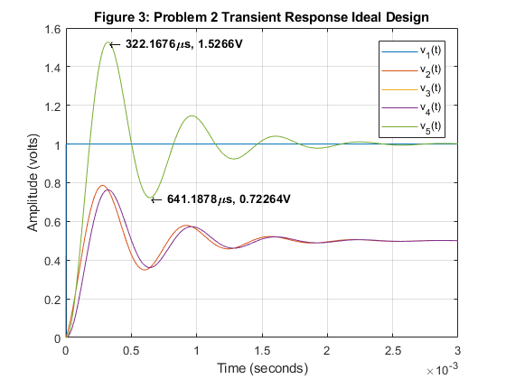
Display the MATLAB peak overshoot and undershoot values for the Ideal design.
display(' '); display('The MATLAB peak overshoot and undershoot values are:'); fprintf(' V5 p.o. = %+11.4f Volts.\n', v5_pk_overshoot_ideal_2); fprintf(' V5 p.u. = %+11.4f Volts.\n', v5_pk_undershoot_ideal_2); fprintf(' t p.o. = %+11.4e seconds.\n', t2_pk_overshoot_ideal_2); fprintf(' t p.u. = %+11.4e seconds.\n', t2_pk_undershoot_ideal_2);
The MATLAB peak overshoot and undershoot values are:
V5 p.o. = +1.5266 Volts.
V5 p.u. = +0.7226 Volts.
t p.o. = +3.2217e-04 seconds.
t p.u. = +6.4119e-04 seconds.
Problem 3
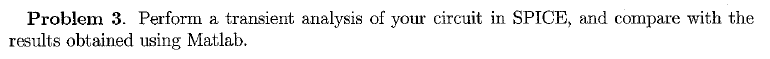
fignum = fignum+1;
The LTSpice schematic for the circuit is shown below.

fignum = fignum+1;
The LTSpice voltage source setup for the circuit is shown below.
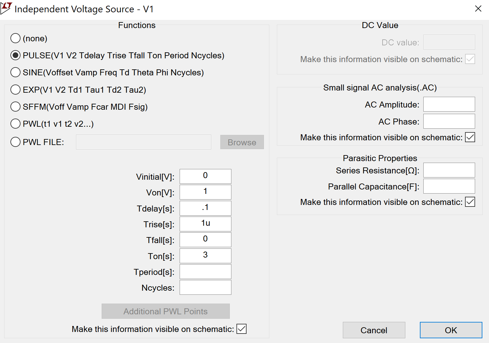
fignum = fignum+1;
The LTSpice model transient analysis simulation setup is shown below.
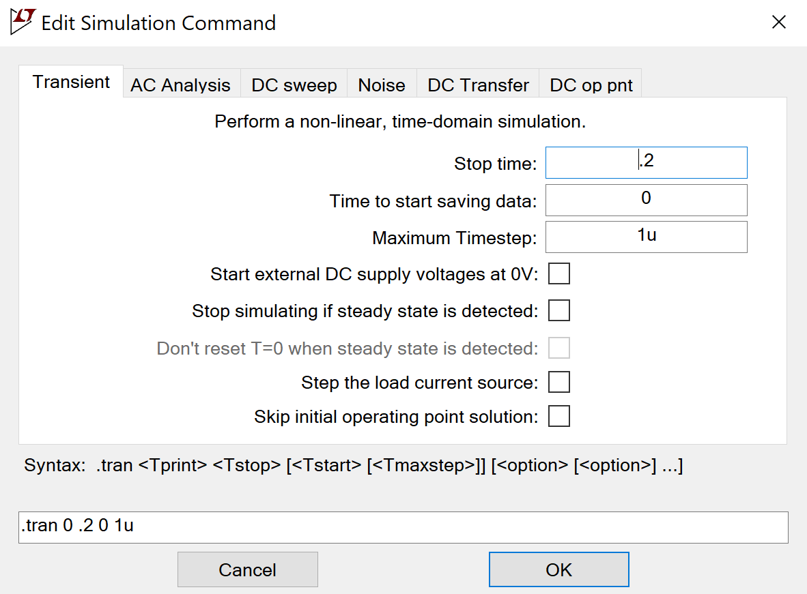
fignum = fignum+1;
The LTSpice model for the simulation result is shown below.

fignum = fignum+1; % Capture peak overshoot and undershoot voltages from the LTSpice plot. ltspice_v5_pk_overshoot_ideal_2 = 1.5268; ltspice_v5_pk_undershoot_ideal_2 = 0.7225; % Capture peak overshoot and undershoot time stamps from the LTSpice plot. ltspice_t2_pk_overshoot_ideal_2 = 722*10^-6; ltspice_t2_pk_undershoot_ideal_2 = 1.039*10^-3;
Display the LTSpice peak overshoot and undershoot values for the Ideal design.
display(' '); display('The LTSpice peak overshoot and undershoot values are:'); fprintf(' V5 p.o. = %+11.4f Volts.\n', ... ltspice_v5_pk_overshoot_ideal_2); fprintf(' V5 p.u. = %+11.4f Volts.\n', ... ltspice_v5_pk_undershoot_ideal_2); fprintf(' t p.o. = %+11.4e seconds.\n', ... ltspice_t2_pk_overshoot_ideal_2); fprintf(' t p.u. = %+11.4e seconds.\n', ... ltspice_t2_pk_undershoot_ideal_2);
The LTSpice peak overshoot and undershoot values are:
V5 p.o. = +1.5268 Volts.
V5 p.u. = +0.7225 Volts.
t p.o. = +7.2200e-04 seconds.
t p.u. = +1.0390e-03 seconds.
Calculate the percent difference at the peak overshoot and undershoot values between MATLAB and LTSpice Ideal Designs.
diff_ideal_v5_pk_overshoot_2 = ... (ltspice_v5_pk_overshoot_ideal_2 - v5_pk_overshoot_ideal_2) ... /abs(v5_pk_overshoot_ideal_2)*100; diff_ideal_v5_pk_undershoot_2 = ... (ltspice_v5_pk_undershoot_ideal_2 - v5_pk_undershoot_ideal_2) ... /abs(v5_pk_undershoot_ideal_2)*100; diff_ideal_t2_pk_overshoot_2 = ... (ltspice_t2_pk_overshoot_ideal_2 - t2_pk_overshoot_ideal_2) ... /abs(t2_pk_overshoot_ideal_2)*100; diff_ideal_t2_pk_undershoot_2 = ... (ltspice_t2_pk_undershoot_ideal_2 - t2_pk_undershoot_ideal_2) ... /abs(t2_pk_undershoot_ideal_2)*100; display(' '); display('The % difference between MATLAB and LTSpice at the peaks:'); fprintf(' MATLAB V5 p.o. = %+11.4f Volts.\n', ... v5_pk_overshoot_ideal_2); fprintf(' LTSpice V5 p.o. = %+11.4f Volts.\n', ... ltspice_v5_pk_overshoot_ideal_2); fprintf(' %% diff = %+8.4f (%%).\n', ... diff_ideal_v5_pk_overshoot_2); fprintf(' MATLAB V5 p.u. = %+11.4f Volts.\n', ... v5_pk_undershoot_ideal_2); fprintf(' LTSpice V5 p.u. = %+11.4f Volts.\n', ... ltspice_v5_pk_undershoot_ideal_2); fprintf(' %% diff = %+8.4f (%%).\n', ... diff_ideal_v5_pk_undershoot_2); fprintf(' MATLAB t p.o. = %+11.4e seconds.\n', ... t2_pk_overshoot_ideal_2); fprintf(' LTSpice t p.o. = %+11.4e seconds.\n', ... ltspice_t2_pk_overshoot_ideal_2); fprintf(' %% diff = %+8.4f (%%).\n', ... diff_ideal_t2_pk_overshoot_2); fprintf(' MATLAB t p.u. = %+11.4e seconds.\n', ... t2_pk_undershoot_ideal_2); fprintf(' LTSpice t p.u. = %+11.4e seconds.\n', ... ltspice_t2_pk_undershoot_ideal_2); fprintf(' %% diff = %+8.4f (%%).\n', ... diff_ideal_t2_pk_undershoot_2);
The % difference between MATLAB and LTSpice at the peaks:
MATLAB V5 p.o. = +1.5266 Volts.
LTSpice V5 p.o. = +1.5268 Volts.
% diff = +0.0116 (%).
MATLAB V5 p.u. = +0.7226 Volts.
LTSpice V5 p.u. = +0.7225 Volts.
% diff = -0.0189 (%).
MATLAB t p.o. = +3.2217e-04 seconds.
LTSpice t p.o. = +7.2200e-04 seconds.
% diff = +124.1069 (%).
MATLAB t p.u. = +6.4119e-04 seconds.
LTSpice t p.u. = +1.0390e-03 seconds.
% diff = +62.0430 (%).
Problem 6
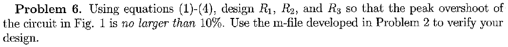
fignum = fignum+1;
Display the component values for the Ideal design.
display(' '); display('The Ideal Design component values are:'); fprintf(' R1 = %+11.4f Ohms.\n', R1_ideal_6 ); fprintf(' R2 = %+11.4f Ohms.\n', R2_ideal_6); fprintf(' R3 = %+11.4f Ohms.\n', R3_ideal_6); fprintf(' R4 = %+11.4f Ohms.\n', R4_ideal_6); fprintf(' R5 = %+11.4f Ohms.\n', R5_ideal_6); fprintf(' C1 = %+11.4e Farads.\n', C1_ideal_6); fprintf(' C2 = %+11.4e Farads.\n', C2_ideal_6);
The Ideal Design component values are:
R1 = +1373.0000 Ohms.
R2 = +1373.0000 Ohms.
R3 = +960.0000 Ohms.
R4 = +1000.0000 Ohms.
R5 = +1000.0000 Ohms.
C1 = +1.0000e-07 Farads.
C2 = +1.0000e-07 Farads.
Calculate the MATLAB transient response for the Ideal design.
% Update the resistor variables used in the proj2E100_transient function % before calling the ode23t solver. R1_circuit = R1_ideal_6; R2_circuit = R2_ideal_6 ; R3_circuit = R3_ideal_6; R4_circuit = R4_ideal_6; R5_circuit = R5_ideal_6; %ODE solution, refer to the example in Problem 2 options = odeset('mass',C_ideal_6, 'RelTol', 0.1e-9); [t6, x6] = ode23t(@proj2E100_transient, time6, x0, options); % Capture peak overshoot and undershoot voltages with indexes. [v5_pk_overshoot_ideal_6 , ... v5_pk_overshoot_ideal_index_6 ] = max( x6(:,5) ); [v5_pk_undershoot_ideal_6, ... v5_pk_undershoot_ideal_index_6] = ... min( x6(v5_pk_overshoot_ideal_index_6 + 1:size(t6),5) ); v5_pk_undershoot_ideal_index_6 = ... v5_pk_undershoot_ideal_index_6 + v5_pk_overshoot_ideal_index_6; % Capture peak overshoot and undershoot time stamps at peak indexes. t6_pk_overshoot_ideal_6 = t6(v5_pk_overshoot_ideal_index_6); t6_pk_undershoot_ideal_6 = t6(v5_pk_undershoot_ideal_index_6);
Generate the MATLAB plot for the transient response.
fignum = fignum+1; figObj = figure(fignum); % Establish a figure number set(fignum, 'Name', ... ['Prob 6: Transient Response Ideal Design']); % Name the figure Tr_ideal_6_Plot = plot(t6,x6); % Generate plot grid on; % Turn grid on xlabel('Time (seconds)'); % Label the x-axis ylabel('Amplitude (volts)'); % Label the y-axis axis([plot_left_6, plot_right_6, ... plot_bottom_6, plot_top_6]); % Bound plot title(['Figure ',num2str(fignum,'%-2.u'),... ': Problem 6 Transient Response Ideal Design']); legend('v_1(t)', 'v_2(t)', 'v_3(t)', 'v_4(t)', 'v_5(t)', ... 'Location', 'NorthEast'); % Add annotation to the plot. strmax = ['\leftarrow ', num2str(t6_pk_overshoot_ideal_6 * 1e6), ... '\mus, ', num2str(v5_pk_overshoot_ideal_6),'V']; text(t6_pk_overshoot_ideal_6, ... v5_pk_overshoot_ideal_6, ... strmax, 'HorizontalAlignment', 'left', 'FontWeight', 'bold'); strmin = [num2str(t6_pk_undershoot_ideal_6 * 1e6), ... '\mus, ', num2str(v5_pk_undershoot_ideal_6),'V \rightarrow']; text(t6_pk_undershoot_ideal_6, ... v5_pk_undershoot_ideal_6, ... strmin, 'HorizontalAlignment', 'right', 'FontWeight', 'bold');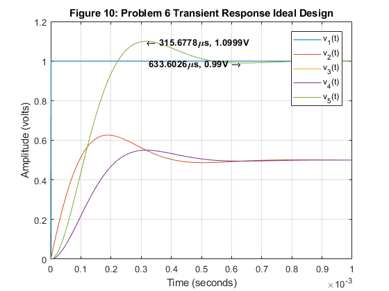
Display the MATLAB peak overshoot and undershoot values for the Ideal design.
display(' '); display('The MATLAB peak overshoot and undershoot values are:'); fprintf(' V5 p.o. = %+11.4f Volts.\n', v5_pk_overshoot_ideal_6); fprintf(' V5 p.u. = %+11.4f Volts.\n', v5_pk_undershoot_ideal_6); fprintf(' t p.o. = %+11.4e seconds.\n', t6_pk_overshoot_ideal_6); fprintf(' t p.u. = %+11.4e seconds.\n', t6_pk_undershoot_ideal_6);
The MATLAB peak overshoot and undershoot values are:
V5 p.o. = +1.0999 Volts.
V5 p.u. = +0.9900 Volts.
t p.o. = +3.1568e-04 seconds.
t p.u. = +6.3360e-04 seconds.
The LTSpice schematic for the circuit is shown below.

fignum = fignum+1;
The LTSpice voltage source setup for the circuit is shown below.

fignum = fignum+1;
The LTSpice model transient analysis simulation setup is shown below.

fignum = fignum+1;
The LTSpice model for the simulation result is shown below.

fignum = fignum+1; % Capture peak overshoot and undershoot voltages from the plot. ltspice_v5_pk_overshoot_ideal_6 = 1.0835; ltspice_v5_pk_undershoot_ideal_6 = 0.9931; % Capture peak overshoot and undershoot time stamps from the plot. ltspice_t6_pk_overshoot_ideal_6 = 721.3*10^-6; ltspice_t6_pk_undershoot_ideal_6 = 1.033*10^-3;
Display the LTSpice peak overshoot and undershoot values for the Ideal design.
display(' '); display('The LTSpice peak overshoot and undershoot values are:'); fprintf(' V5 p.o. = %+11.4f Volts.\n', ltspice_v5_pk_overshoot_ideal_6); fprintf(' V5 p.u. = %+11.4f Volts.\n', ltspice_v5_pk_undershoot_ideal_6); fprintf(' t p.o. = %+11.4e seconds.\n', ltspice_t6_pk_overshoot_ideal_6); fprintf(' t p.u. = %+11.4e seconds.\n', ltspice_t6_pk_undershoot_ideal_6);
The LTSpice peak overshoot and undershoot values are:
V5 p.o. = +1.0835 Volts.
V5 p.u. = +0.9931 Volts.
t p.o. = +7.2130e-04 seconds.
t p.u. = +1.0330e-03 seconds.
Calculate the percent difference at the peak overshoot and undershoot values between MATLAB and LTSpice Ideal Designs.
diff_ideal_v5_pk_overshoot_6 = ... (ltspice_v5_pk_overshoot_ideal_6 - v5_pk_overshoot_ideal_6) ... /abs(v5_pk_overshoot_ideal_6)*100; diff_ideal_v5_pk_undershoot_6 = ... (ltspice_v5_pk_undershoot_ideal_6 - v5_pk_undershoot_ideal_6) ... /abs(v5_pk_undershoot_ideal_6)*100; diff_ideal_t6_pk_overshoot_6 = ... (ltspice_t6_pk_overshoot_ideal_6 - t6_pk_overshoot_ideal_6) ... /abs(t6_pk_overshoot_ideal_6)*100; diff_ideal_t6_pk_undershoot_6 = ... (ltspice_t6_pk_undershoot_ideal_6 - t6_pk_undershoot_ideal_6) ... /abs(t6_pk_undershoot_ideal_6)*100; display(' '); display('The % difference between MATLAB and LTSpice at the peaks:'); fprintf(' MATLAB V5 p.o. = %+11.4f Volts.\n', ... v5_pk_overshoot_ideal_6); fprintf(' LTSpice V5 p.o. = %+11.4f Volts.\n', ... ltspice_v5_pk_overshoot_ideal_6); fprintf(' %% diff = %+8.4f (%%).\n', ... diff_ideal_v5_pk_overshoot_6); fprintf(' MATLAB V5 p.u. = %+11.4f Volts.\n', ... v5_pk_undershoot_ideal_6); fprintf(' LTSpice V5 p.u. = %+11.4f Volts.\n', ... ltspice_v5_pk_undershoot_ideal_6); fprintf(' %% diff = %+8.4f (%%).\n', ... diff_ideal_v5_pk_undershoot_6); fprintf(' MATLAB t p.o. = %+11.4e seconds.\n', ... t6_pk_overshoot_ideal_6); fprintf(' LTSpice t p.o. = %+11.4e seconds.\n', ... ltspice_t6_pk_overshoot_ideal_6); fprintf(' %% diff = %+8.4f (%%).\n', ... diff_ideal_t6_pk_overshoot_6); fprintf(' MATLAB t p.u. = %+11.4e seconds.\n', ... t6_pk_undershoot_ideal_6); fprintf(' LTSpice t p.u. = %+11.4e seconds.\n', ... ltspice_t6_pk_undershoot_ideal_6); fprintf(' %% diff = %+8.4f (%%).\n', ... diff_ideal_t6_pk_undershoot_6);
The % difference between MATLAB and LTSpice at the peaks:
MATLAB V5 p.o. = +1.0999 Volts.
LTSpice V5 p.o. = +1.0835 Volts.
% diff = -1.4951 (%).
MATLAB V5 p.u. = +0.9900 Volts.
LTSpice V5 p.u. = +0.9931 Volts.
% diff = +0.3130 (%).
MATLAB t p.o. = +3.1568e-04 seconds.
LTSpice t p.o. = +7.2130e-04 seconds.
% diff = +128.4925 (%).
MATLAB t p.u. = +6.3360e-04 seconds.
LTSpice t p.u. = +1.0330e-03 seconds.
% diff = +63.0359 (%).
Problem 7 Template
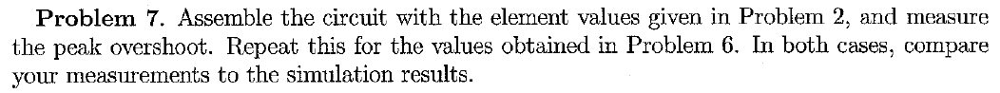
fignum = fignum+1;
Display the measured values for the power supply voltages and the components used in the Actual design for circuit 2.
Vdd_meas_pos_2 = 15.613 ; % Positive power supply voltage Vdd_meas_neg_2 = -15.069 ; % Negative power supply voltage R1_ideal_meas_2 = 5030.5 ; % Ohms R2_ideal_meas_2 = 5022.1 ; % Ohms R3_ideal_meas_2 = 197.35 + 197.55 ; % Ohms - Used two resistors to make 394.9 Ohms R4_ideal_meas_2 = 998.7 ; % Ohms R5_ideal_meas_2 = 996.2 ; % Ohms C1_ideal_meas_2 = 0.1105e-6 ; % Farads C2_ideal_meas_2 = 0.1003e-6 ; % Farads display(' '); display('The measured component values for circuit 2 are:'); fprintf(' Vdd+ = %+11.4f Volts.\n', Vdd_meas_pos_2); fprintf(' Vdd- = %+11.4f Volts.\n', Vdd_meas_neg_2); fprintf(' R1 = %+11.4f Ohms.\n', R1_ideal_meas_2); fprintf(' R2 = %+11.4f Ohms.\n', R2_ideal_meas_2); fprintf(' R3 = %+11.4f Ohms.\n', R3_ideal_meas_2); fprintf(' R4 = %+11.4f Ohms.\n', R4_ideal_meas_2); fprintf(' R5 = %+11.4f Ohms.\n', R5_ideal_meas_2); fprintf(' C1 = %+11.4e Farads.\n', C1_ideal_meas_2); fprintf(' C2 = %+11.4e Farads.\n', C2_ideal_meas_2);
The measured component values for circuit 2 are:
Vdd+ = +15.6130 Volts.
Vdd- = -15.0690 Volts.
R1 = +5030.5000 Ohms.
R2 = +5022.1000 Ohms.
R3 = +394.9000 Ohms.
R4 = +998.7000 Ohms.
R5 = +996.2000 Ohms.
C1 = +1.1050e-07 Farads.
C2 = +1.0030e-07 Farads.
Compute the percent differences between the Measured and Ideal design component values for circuit 2.
diff_Vdd_pos_meas_2 = (Vdd_meas_pos_2-Vdd_pos)/abs(Vdd_pos)*100; diff_Vdd_neg_meas_2 = (Vdd_meas_neg_2-Vdd_neg)/abs(Vdd_neg)*100; diff_R1_meas_2 = (R1_ideal_meas_2-R1_ideal_2)/abs(R1_ideal_2)*100; diff_R2_meas_2 = (R2_ideal_meas_2-R2_ideal_2)/abs(R2_ideal_2)*100; diff_R3_meas_2 = (R3_ideal_meas_2-R3_ideal_2)/abs(R3_ideal_2)*100; diff_R4_meas_2 = (R4_ideal_meas_2-R4_ideal_2)/abs(R4_ideal_2)*100; diff_R5_meas_2 = (R5_ideal_meas_2-R5_ideal_2)/abs(R5_ideal_2)*100; diff_C1_meas_2 = (C1_ideal_meas_2-C1_ideal_2)/abs(C1_ideal_2)*100; diff_C2_meas_2 = (C2_ideal_meas_2-C2_ideal_2)/abs(C2_ideal_2)*100; display(' '); display('The percent difference between Measured and Ideal design'); display('component values for circuit 2:'); fprintf(' %% diff Vdd+ = %+8.4f (%%).\n', diff_Vdd_pos_meas_2); fprintf(' %% diff Vdd- = %+8.4f (%%).\n', diff_Vdd_neg_meas_2); fprintf(' %% diff R1 = %+8.4f (%%).\n', diff_R1_meas_2); fprintf(' %% diff R2 = %+8.4f (%%).\n', diff_R2_meas_2); fprintf(' %% diff R3 = %+8.4f (%%).\n', diff_R3_meas_2); fprintf(' %% diff R4 = %+8.4f (%%).\n', diff_R4_meas_2); fprintf(' %% diff R5 = %+8.4f (%%).\n', diff_R5_meas_2); fprintf(' %% diff C1 = %+8.4f (%%).\n', diff_C1_meas_2); fprintf(' %% diff C2 = %+8.4f (%%).\n', diff_C2_meas_2);
The percent difference between Measured and Ideal design
component values for circuit 2:
% diff Vdd+ = +4.0867 (%).
% diff Vdd- = -0.4600 (%).
% diff R1 = +0.6100 (%).
% diff R2 = +0.4420 (%).
% diff R3 = -1.2750 (%).
% diff R4 = -0.1300 (%).
% diff R5 = -0.3800 (%).
% diff C1 = +10.5000 (%).
% diff C2 = +0.3000 (%).
The function generator setup for circuit 2 is shown below.
Adjust the function generator's Vpp setting until the oscilloscope indicates that the input voltage has a Vpp as close to 1.0Vpp as possible. The function generator's frequency is set to produce a 100Hz square wave out of the Prototyping board location.
Capture an image of the function generator's window and include this image in the final report. The Snipping Tool in Windows can be used to capture this image.
fignum = fignum+1;
The oscilloscope setup for circuit 2's input voltage is shown below.
........................................................................
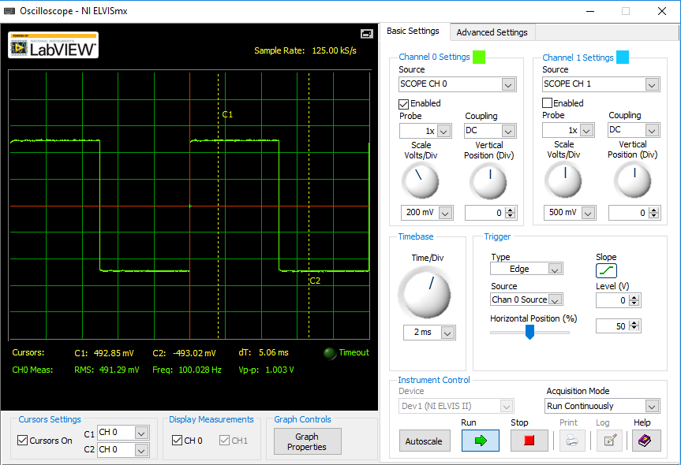
fignum = fignum+1;
Record the positive peak and negative peak input voltage values from the oscilloscope's cursor displays for circuit 2.
Calculate the measured input step function signal's amplitude by subtracting the negative peak input voltage from the positive peak input voltage.
These values will be used to determine the actual peak overshoot and undershoot values measured in subsequent steps.
This procedure is necessary to correlate the measured values with MATLAB because the step function used in MATLAB and LTSpice is a signal that starts at 0V and transitions to 1V, whereas the square wave signal produced by the ELVIS function generator is a signal that starts at -500mV and transitions to +500mV (ideally).
Vin_meas_pos_2 = 492.85e-3 ; % Positive input signal voltage (from O-Scope) Vin_meas_neg_2 = -493.02e-3 ; % Negative input signal voltage Vin_step_meas_2 = Vin_meas_pos_2 - Vin_meas_neg_2; display(' '); display('The measured input signal values for circuit 2 are:'); fprintf(' Vin+ = %+11.4f Volts.\n', Vin_meas_pos_2); fprintf(' Vin- = %+11.4f Volts.\n', Vin_meas_neg_2); fprintf(' Vin_step = %+11.4f Volts.\n', Vin_step_meas_2);
The measured input signal values for circuit 2 are:
Vin+ = +0.4929 Volts.
Vin- = -0.4930 Volts.
Vin_step = +0.9859 Volts.
The oscilloscope setup for circuit 2's input and output voltage is shown below.
........................................................................
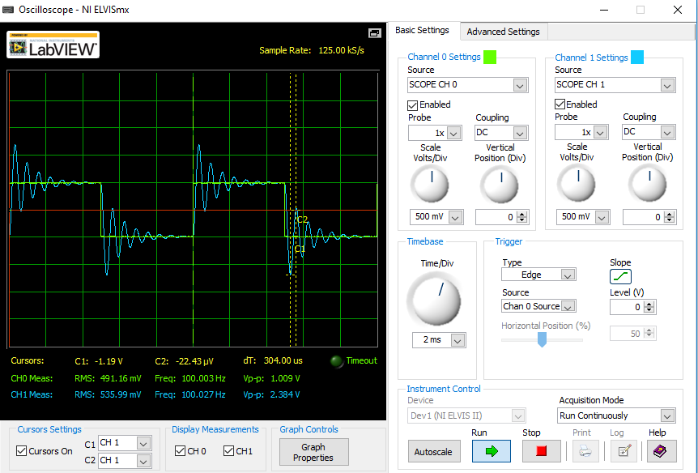
fignum = fignum+1;
Record the stabilized positive and negative output voltage values from the oscilloscope's cursor displays for circuit 2.
Calculate the measured output step function signal's amplitude by subtracting the stabilized negative output voltage from the stabilized positive output voltage.
These values will be used to confirm that the circuit is connected and operating properly.
Vout_meas_pos_2 = 484.50e-3 ; % Stabilized positive output signal voltage Vout_meas_neg_2 = -489.38e-3 ; % Stabilized negative output signal voltage Vout_step_meas_2 = Vout_meas_pos_2 - Vout_meas_neg_2; display(' '); display('The stabilized measured output signal values for circuit 2 are:'); fprintf(' Vout+ = %+11.4f Volts.\n', Vout_meas_pos_2); fprintf(' Vout- = %+11.4f Volts.\n', Vout_meas_neg_2); fprintf(' Vout_step = %+11.4f Volts.\n', Vout_step_meas_2);
The stabilized measured output signal values for circuit 2 are:
Vout+ = +0.4845 Volts.
Vout- = -0.4894 Volts.
Vout_step = +0.9739 Volts.
The oscilloscope setup for circuit 2's peak overshoot output voltage is shown below.
........................................................................
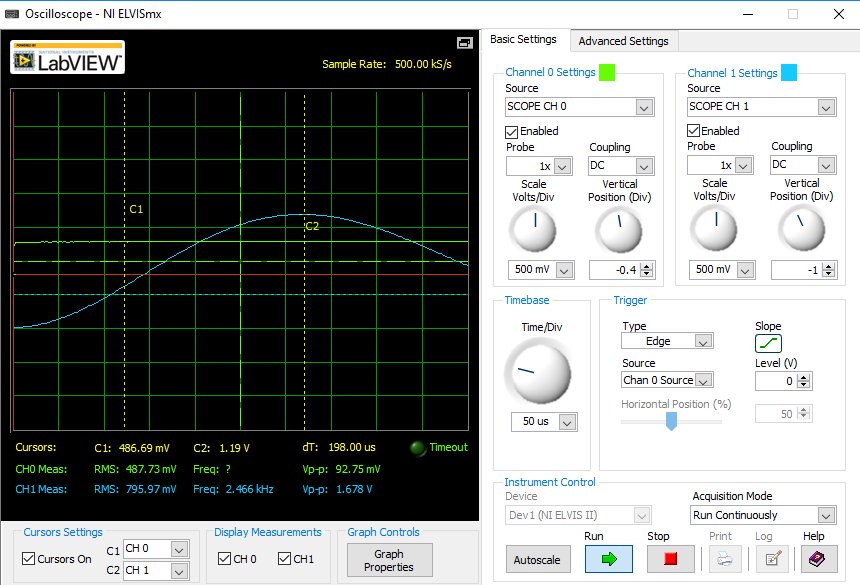
fignum = fignum+1;
Record the peak overshoot output voltage and time of occurrence values from the oscilloscope's cursor displays for circuit 2.
Peak overshoot voltage is obtained from the oscilloscope's cursor 'C2' voltage measurement display.
Time of occurrence is obtained from the oscilloscope's 'dT' time measurement display.
Calculate the measured peak overshoot output voltage that is scaled to a step function that starts at 0V and transitions to 1V. This calculation is necessary to perform comparison calculations that are scaled to those used in MATLAB (or LTSpice for that matter).
% Capture peak overshoot voltage from the oscilloscope C2 display. meas_vout_pk_overshoot_2 = 1.19 ; % Capture peak overshoot time stamp from the oscilloscope dT display. meas_t2_pk_overshoot_ideal_2 = 198e-6 ; % Calculate the actual peak overshoot voltage. meas_v5_pk_overshoot_ideal_2 = ... meas_vout_pk_overshoot_2 - Vout_meas_neg_2; display(' '); display('The measured peak overshoot, output signal values for'); display('circuit 2 are:'); fprintf(' Vout p.o. meas = %+11.4f Volts.\n', ... meas_vout_pk_overshoot_2); fprintf(' Vout p.o. = %+11.4f Volts.\n', ... meas_v5_pk_overshoot_ideal_2); fprintf(' t p.o. = %+11.4e seconds.\n', ... meas_t2_pk_overshoot_ideal_2);
The measured peak overshoot, output signal values for
circuit 2 are:
Vout p.o. meas = +1.1900 Volts.
Vout p.o. = +1.6794 Volts.
t p.o. = +1.9800e-04 seconds.
The oscilloscope setup for circuit 2's peak undershoot output voltage is shown below.
........................................................................
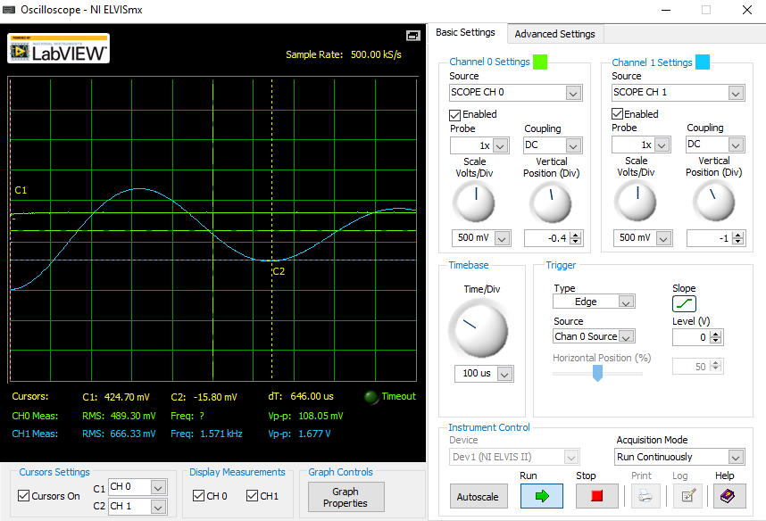
fignum = fignum+1;
Record the peak undershoot output voltage and time of occurrence values from the oscilloscope's cursor displays for circuit 2.
Peak undershoot voltage is obtained from the oscilloscope's cursor 'C2' voltage measurement display.
Time of occurrence is obtained from the oscilloscope's 'dT' time measurement display.
Calculate the measured peak undershoot output voltage that is scaled to a step function that starts at 0V and transitions to 1V. This calculation is necessary to perform comparison calculations that are scaled to those used in MATLAB (or LTSpice for that matter).
% Capture peak undershoot voltage from the oscilloscope C2 display. meas_vout_pk_undershoot_2 = -15.8e-3 ; % Capture peak undershoot time stamp from the oscilloscope dT display. meas_t2_pk_undershoot_ideal_2 = 646e-6; % Calculate the actual peak undershoot voltage. meas_v5_pk_undershoot_ideal_2 = ... meas_vout_pk_undershoot_2 - Vout_meas_neg_2; display(' '); display('The measured peak undershoot, output signal values for'); display('circuit 2 are:'); fprintf(' Vout p.u. meas = %+11.4f Volts.\n', ... meas_vout_pk_undershoot_2); fprintf(' Vout p.u. = %+11.4f Volts.\n', ... meas_v5_pk_undershoot_ideal_2); fprintf(' t p.u. = %+11.4e seconds.\n', ... meas_t2_pk_undershoot_ideal_2);
The measured peak undershoot, output signal values for
circuit 2 are:
Vout p.u. meas = -0.0158 Volts.
Vout p.u. = +0.4736 Volts.
t p.u. = +6.4600e-04 seconds.
Calculate the percent difference at the peak overshoot and undershoot values between MATLAB and measured results for circuit 2.
diff_meas_v5_pk_overshoot_2 = ... (meas_v5_pk_overshoot_ideal_2 - v5_pk_overshoot_ideal_2) ... /abs(v5_pk_overshoot_ideal_2)*100; diff_meas_v5_pk_undershoot_2 = ... (meas_v5_pk_undershoot_ideal_2 - v5_pk_undershoot_ideal_2) ... /abs(v5_pk_undershoot_ideal_2)*100; diff_meas_t2_pk_overshoot_2 = ... (meas_t2_pk_overshoot_ideal_2 - t2_pk_overshoot_ideal_2) ... /abs(t2_pk_overshoot_ideal_2)*100; diff_meas_t2_pk_undershoot_2 = ... (meas_t2_pk_undershoot_ideal_2 - t2_pk_undershoot_ideal_2) ... /abs(t2_pk_undershoot_ideal_2)*100; display(' '); display('The % difference between MATLAB and Measured values at the '); display('peaks for circuit 2:'); fprintf(' MATLAB V5 p.o. = %+11.4f Volts.\n', ... v5_pk_overshoot_ideal_2); fprintf(' Measured V5 p.o. = %+11.4f Volts.\n', ... meas_v5_pk_overshoot_ideal_2); fprintf(' %% diff = %+8.4f (%%).\n', ... diff_meas_v5_pk_overshoot_2); fprintf(' MATLAB V5 p.u. = %+11.4f Volts.\n', ... v5_pk_undershoot_ideal_2); fprintf(' Measured V5 p.u. = %+11.4f Volts.\n', ... meas_v5_pk_undershoot_ideal_2); fprintf(' %% diff = %+8.4f (%%).\n', ... diff_meas_v5_pk_undershoot_2); fprintf(' MATLAB t p.o. = %+11.4e seconds.\n', ... t2_pk_overshoot_ideal_2); fprintf(' Measured t p.o. = %+11.4e seconds.\n', ... meas_t2_pk_overshoot_ideal_2); fprintf(' %% diff = %+8.4f (%%).\n', ... diff_meas_t2_pk_overshoot_2); fprintf(' MATLAB t p.u. = %+11.4e seconds.\n', ... t2_pk_undershoot_ideal_2); fprintf(' Measured t p.u. = %+11.4e seconds.\n', ... meas_t2_pk_undershoot_ideal_2); fprintf(' %% diff = %+8.4f (%%).\n', ... diff_meas_t2_pk_undershoot_2);
The % difference between MATLAB and Measured values at the
peaks for circuit 2:
MATLAB V5 p.o. = +1.5266 Volts.
Measured V5 p.o. = +1.6794 Volts.
% diff = +10.0062 (%).
MATLAB V5 p.u. = +0.7226 Volts.
Measured V5 p.u. = +0.4736 Volts.
% diff = -34.4650 (%).
MATLAB t p.o. = +3.2217e-04 seconds.
Measured t p.o. = +1.9800e-04 seconds.
% diff = -38.5413 (%).
MATLAB t p.u. = +6.4119e-04 seconds.
Measured t p.u. = +6.4600e-04 seconds.
% diff = +0.7505 (%).
Display the measured values for the power supply voltages and the components used in the Actual design for circuit 6.
Vdd_meas_pos_6 = 15.613; % Positive power supply voltage Vdd_meas_neg_6 = 15.069; % Negative power supply voltage R1_ideal_meas_6 = 1283.2 ; % Ohms R2_ideal_meas_6 = 1292.7 ; % Ohms R3_ideal_meas_6 = 991.6 ; % Ohms R4_ideal_meas_6 = 998.7 ; % Ohms R5_ideal_meas_6 = 996.2 ; % Ohms C1_ideal_meas_6 = 0.1105e-6 ; % Farads C2_ideal_meas_6 = 0.1003e-6 ; % Farads display(' '); display('The measured component values for circuit 6 are:'); fprintf(' Vdd+ = %+11.4f Volts.\n', Vdd_meas_pos_6); fprintf(' Vdd- = %+11.4f Volts.\n', Vdd_meas_neg_6); fprintf(' R1 = %+11.4f Ohms.\n', R1_ideal_meas_6); fprintf(' R2 = %+11.4f Ohms.\n', R2_ideal_meas_6); fprintf(' R3 = %+11.4f Ohms.\n', R3_ideal_meas_6); fprintf(' R4 = %+11.4f Ohms.\n', R4_ideal_meas_6); fprintf(' R5 = %+11.4f Ohms.\n', R5_ideal_meas_6); fprintf(' C1 = %+11.4e Farads.\n', C1_ideal_meas_6); fprintf(' C2 = %+11.4e Farads.\n', C2_ideal_meas_6);
The measured component values for circuit 6 are:
Vdd+ = +15.6130 Volts.
Vdd- = +15.0690 Volts.
R1 = +1283.2000 Ohms.
R2 = +1292.7000 Ohms.
R3 = +991.6000 Ohms.
R4 = +998.7000 Ohms.
R5 = +996.2000 Ohms.
C1 = +1.1050e-07 Farads.
C2 = +1.0030e-07 Farads.
Compute the percent differences between the Measured and Ideal design component values for circuit 6.
diff_Vdd_pos_meas_6 = (Vdd_meas_pos_6-Vdd_pos)/abs(Vdd_pos)*100; diff_Vdd_neg_meas_6 = (Vdd_meas_neg_6-Vdd_neg)/abs(Vdd_neg)*100; diff_R1_meas_6 = (R1_ideal_meas_6-R1_ideal_6)/abs(R1_ideal_6)*100; diff_R2_meas_6 = (R2_ideal_meas_6-R2_ideal_6)/abs(R2_ideal_6)*100; diff_R3_meas_6 = (R3_ideal_meas_6-R3_ideal_6)/abs(R3_ideal_6)*100; diff_R4_meas_6 = (R4_ideal_meas_6-R4_ideal_6)/abs(R4_ideal_6)*100; diff_R5_meas_6 = (R5_ideal_meas_6-R5_ideal_6)/abs(R5_ideal_6)*100; diff_C1_meas_6 = (C1_ideal_meas_6-C1_ideal_6)/abs(C1_ideal_6)*100; diff_C2_meas_6 = (C2_ideal_meas_6-C2_ideal_6)/abs(C2_ideal_6)*100; display(' '); display('The percent difference between Measured and Ideal design'); display('component values for circuit 6:'); fprintf(' %% diff Vdd+ = %+8.4f (%%).\n', diff_Vdd_pos_meas_6); fprintf(' %% diff Vdd- = %+8.4f (%%).\n', diff_Vdd_neg_meas_6); fprintf(' %% diff R1 = %+8.4f (%%).\n', diff_R1_meas_6); fprintf(' %% diff R2 = %+8.4f (%%).\n', diff_R2_meas_6); fprintf(' %% diff R3 = %+8.4f (%%).\n', diff_R3_meas_6); fprintf(' %% diff R4 = %+8.4f (%%).\n', diff_R4_meas_6); fprintf(' %% diff R5 = %+8.4f (%%).\n', diff_R5_meas_6); fprintf(' %% diff C1 = %+8.4f (%%).\n', diff_C1_meas_6); fprintf(' %% diff C2 = %+8.4f (%%).\n', diff_C2_meas_6);
The percent difference between Measured and Ideal design
component values for circuit 6:
% diff Vdd+ = +4.0867 (%).
% diff Vdd- = +200.4600 (%).
% diff R1 = -6.5404 (%).
% diff R2 = -5.8485 (%).
% diff R3 = +3.2917 (%).
% diff R4 = -0.1300 (%).
% diff R5 = -0.3800 (%).
% diff C1 = +10.5000 (%).
% diff C2 = +0.3000 (%).
The function generator setup for circuit 6 is shown below.
........................................................................
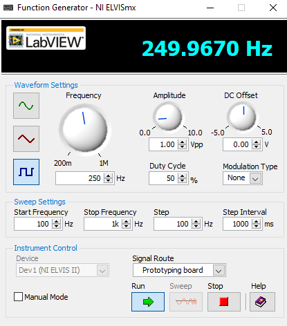
fignum = fignum+1;
The oscilloscope setup for circuit 6's input voltage is shown below.
........................................................................
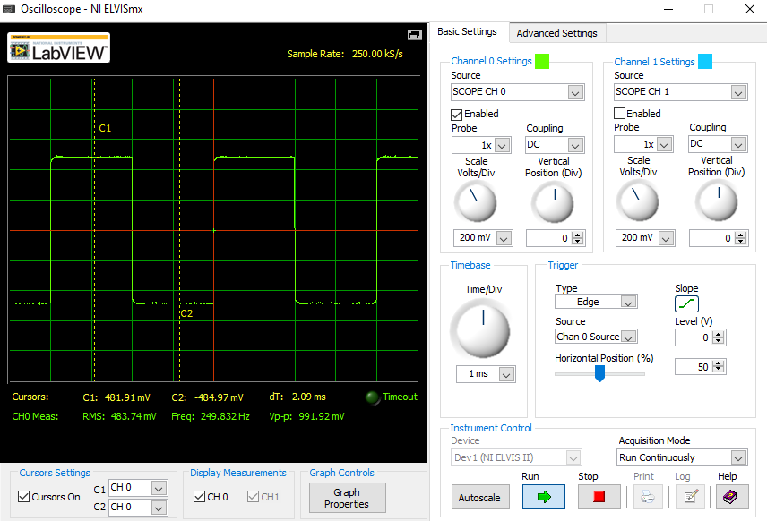
fignum = fignum+1;
Record the positive peak and negative peak input voltage values from the oscilloscope's cursor displays for circuit 6.
........................................................................
Vin_meas_pos_6 = 481.91e-3 ; % Positive input signal voltage Vin_meas_neg_6 = -484.97e-3 ; % Negative input signal voltage Vin_step_meas_6 = Vin_meas_pos_6 - Vin_meas_neg_6; display(' '); display('The measured input signal values for circuit 6 are:'); fprintf(' Vin+ = %+11.4f Volts.\n', Vin_meas_pos_6); fprintf(' Vin- = %+11.4f Volts.\n', Vin_meas_neg_6); fprintf(' Vin_step = %+11.4f Volts.\n', Vin_step_meas_6);
The measured input signal values for circuit 6 are:
Vin+ = +0.4819 Volts.
Vin- = -0.4850 Volts.
Vin_step = +0.9669 Volts.
The oscilloscope setup for circuit 6's input and output voltage is shown below.
........................................................................

fignum = fignum+1;
Record the stabilized positive and negative output voltage values from the oscilloscope's cursor displays for circuit 6.
Calculate the measured output step function signal's amplitude by subtracting the stabilized negative output voltage from the stabilized positive output voltage.
These values will be used to confirm that the circuit is connected and operating properly.
Vout_meas_pos_6 = 488.25e-3 ; % Stabilized positive output signal voltage Vout_meas_neg_6 = -485.65e-3 ; % Stabilized negative output signal voltage Vout_step_meas_6 = Vout_meas_pos_6 - Vout_meas_neg_6; display(' '); display('The stabilized measured output signal values for circuit 6 are:'); fprintf(' Vout+ = %+11.4f Volts.\n', Vout_meas_pos_6); fprintf(' Vout- = %+11.4f Volts.\n', Vout_meas_neg_6); fprintf(' Vout_step = %+11.4f Volts.\n', Vout_step_meas_6);
The stabilized measured output signal values for circuit 6 are:
Vout+ = +0.4883 Volts.
Vout- = -0.4857 Volts.
Vout_step = +0.9739 Volts.
The oscilloscope setup for circuit 6's peak overshoot output voltage is shown below.
........................................................................

fignum = fignum+1;
Record the peak overshoot output voltage and time of occurrence values from the oscilloscope's cursor displays for circuit 6.
........................................................................
Capture peak overshoot voltage from the oscilloscope C2 display.
meas_vout_pk_overshoot_6 = 592.93e-3 ; % Capture peak overshoot time stamp from the oscilloscope dT display. meas_t6_pk_overshoot_ideal_6 = 300e-6 ; % Calculate the actual peak overshoot voltage. meas_v5_pk_overshoot_ideal_6 = ... meas_vout_pk_overshoot_6 - Vout_meas_neg_6; display(' '); display('The measured peak overshoot, output signal values for'); display('circuit 6 are:'); fprintf(' Vout p.o. meas = %+11.4f Volts.\n', ... meas_vout_pk_overshoot_6); fprintf(' Vout p.o. = %+11.4f Volts.\n', ... meas_v5_pk_overshoot_ideal_6); fprintf(' t p.o. = %+11.4e seconds.\n', ... meas_t6_pk_overshoot_ideal_6);
The measured peak overshoot, output signal values for
circuit 6 are:
Vout p.o. meas = +0.5929 Volts.
Vout p.o. = +1.0786 Volts.
t p.o. = +3.0000e-04 seconds.
The oscilloscope setup for circuit 6's peak undershoot output voltage is shown below.
........................................................................

fignum = fignum+1;
Record the peak undershoot output voltage and time of occurrence values from the oscilloscope's cursor displays for circuit 6.
Capture peak undershoot voltage from the oscilloscope C2 display.
meas_vout_pk_undershoot_6 = 474.34e-3; % Capture peak undershoot time stamp from the oscilloscope dT display. meas_t6_pk_undershoot_ideal_6 = 638e-6; % Calculate the actual peak undershoot voltage. meas_v5_pk_undershoot_ideal_6 = ... meas_vout_pk_undershoot_6 - Vout_meas_neg_6; display(' '); display('The measured peak undershoot, output signal values for'); display('circuit 6 are:'); fprintf(' Vout p.u. meas = %+11.4f Volts.\n', ... meas_vout_pk_undershoot_6); fprintf(' Vout p.u. = %+11.4f Volts.\n', ... meas_v5_pk_undershoot_ideal_6); fprintf(' t p.u. = %+11.4e seconds.\n', ... meas_t6_pk_undershoot_ideal_6);
The measured peak undershoot, output signal values for
circuit 6 are:
Vout p.u. meas = +0.4743 Volts.
Vout p.u. = +0.9600 Volts.
t p.u. = +6.3800e-04 seconds.
Calculate the percent difference at the peak overshoot and undershoot values between MATLAB and measured results for circuit 6.
diff_meas_v5_pk_overshoot_6 = ... (meas_v5_pk_overshoot_ideal_6 - v5_pk_overshoot_ideal_6) ... /abs(v5_pk_overshoot_ideal_6)*100; diff_meas_v5_pk_undershoot_6 = ... (meas_v5_pk_undershoot_ideal_6 - v5_pk_undershoot_ideal_6) ... /abs(v5_pk_undershoot_ideal_6)*100; diff_meas_t6_pk_overshoot_6 = ... (meas_t6_pk_overshoot_ideal_6 - t6_pk_overshoot_ideal_6) ... /abs(t6_pk_overshoot_ideal_6)*100; diff_meas_t6_pk_undershoot_6 = ... (meas_t6_pk_undershoot_ideal_6 - t6_pk_undershoot_ideal_6) ... /abs(t6_pk_undershoot_ideal_6)*100; display(' '); display('The % difference between MATLAB and Measured values at the '); display('peaks for circuit 6:'); fprintf(' MATLAB V5 p.o. = %+11.4f Volts.\n', ... v5_pk_overshoot_ideal_6); fprintf(' Measured V5 p.o. = %+11.4f Volts.\n', ... meas_v5_pk_overshoot_ideal_6); fprintf(' %% diff = %+8.4f (%%).\n', ... diff_meas_v5_pk_overshoot_6); fprintf(' MATLAB V5 p.u. = %+11.4f Volts.\n', ... v5_pk_undershoot_ideal_6); fprintf(' Measured V5 p.u. = %+11.4f Volts.\n', ... meas_v5_pk_undershoot_ideal_6); fprintf(' %% diff = %+8.4f (%%).\n', ... diff_meas_v5_pk_undershoot_6); fprintf(' MATLAB t p.o. = %+11.4e seconds.\n', ... t6_pk_overshoot_ideal_6); fprintf(' Measured t p.o. = %+11.4e seconds.\n', ... meas_t6_pk_overshoot_ideal_6); fprintf(' %% diff = %+8.4f (%%).\n', ... diff_meas_t6_pk_overshoot_6); fprintf(' MATLAB t p.u. = %+11.4e seconds.\n', ... t6_pk_undershoot_ideal_6); fprintf(' Measured t p.u. = %+11.4e seconds.\n', ... meas_t6_pk_undershoot_ideal_6); fprintf(' %% diff = %+8.4f (%%).\n', ... diff_meas_t6_pk_undershoot_6);
The % difference between MATLAB and Measured values at the
peaks for circuit 6:
MATLAB V5 p.o. = +1.0999 Volts.
Measured V5 p.o. = +1.0786 Volts.
% diff = -1.9424 (%).
MATLAB V5 p.u. = +0.9900 Volts.
Measured V5 p.u. = +0.9600 Volts.
% diff = -3.0314 (%).
MATLAB t p.o. = +3.1568e-04 seconds.
Measured t p.o. = +3.0000e-04 seconds.
% diff = -4.9664 (%).
MATLAB t p.u. = +6.3360e-04 seconds.
Measured t p.u. = +6.3800e-04 seconds.
% diff = +0.6940 (%).
Program execution complete
display(' '); disp('Program execution complete....');
Program execution complete....